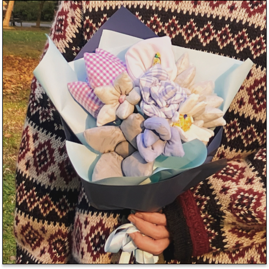
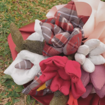
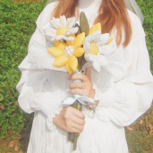

<div class="mx-auto md:px-28 px-0">
  <div class="flex flex-col md:flex-row md:items-start space-y-4 md:space-y-0 md:space-x-6">
    <!-- 图片展示区域 -->
    <div class="w-452 h-452 mr-32">
      
    </div>
    <!-- 文字描述区域 -->
    <div class="flex-1 flex flex-col justify-between">
      <div>
        <div class="text-2xl font-semibold ">設計師款 Designer Style</div>
        <p class="mt-8 leading-8 text-lg text-justify">
          我們重新定義廢棄布料與花店之間的關係，以實踐環境友善的廢棄布料設計了海芋、小樹苗、小蒼蘭、桔梗花、鬱金香、康乃馨、玫瑰花、向日葵、小雛菊九種花束款式，讓您在選購禮品時，多一個環保的選擇！同時透過廢棄布料的使用，減少垃圾產出，降低對地球生態的負擔，將永續概念融入生活的魅力傳遞給大眾。
        </p>
      </div>
      <!-- 辅助图片列表 -->
      <div class="flex justify-start items-end space-x-6 md:mt-16 mt-6">
        
        
        
      </div>
    </div>
  </div>
</div>
